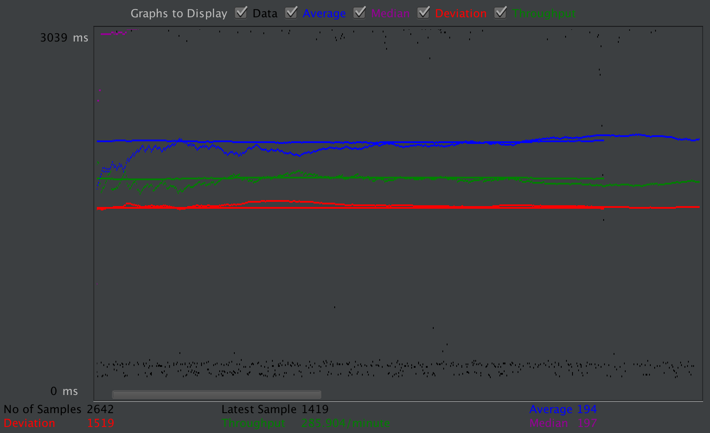
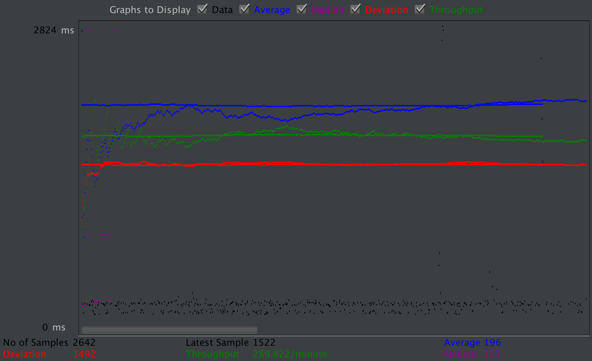
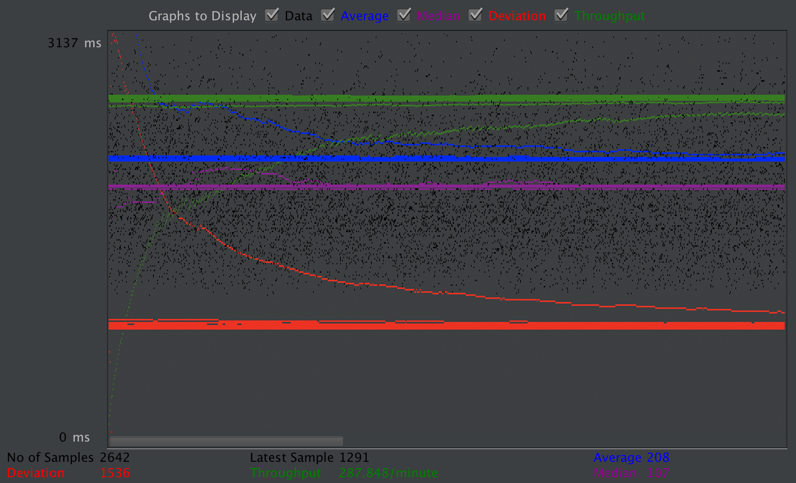
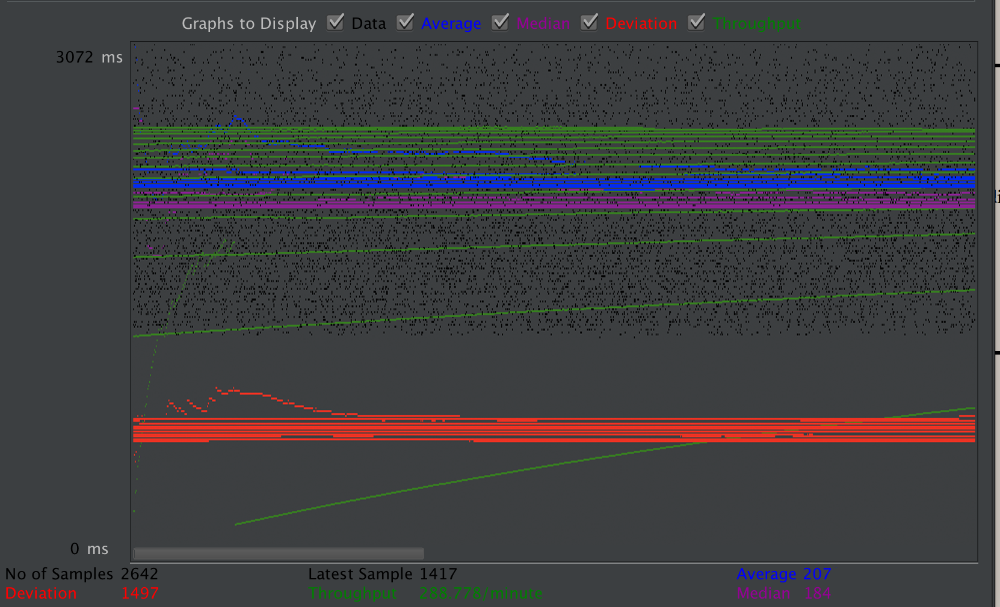
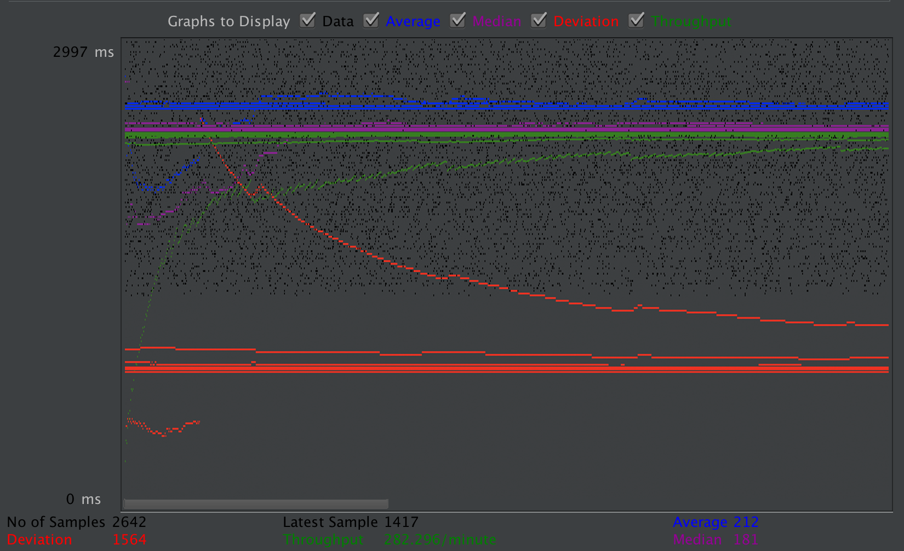
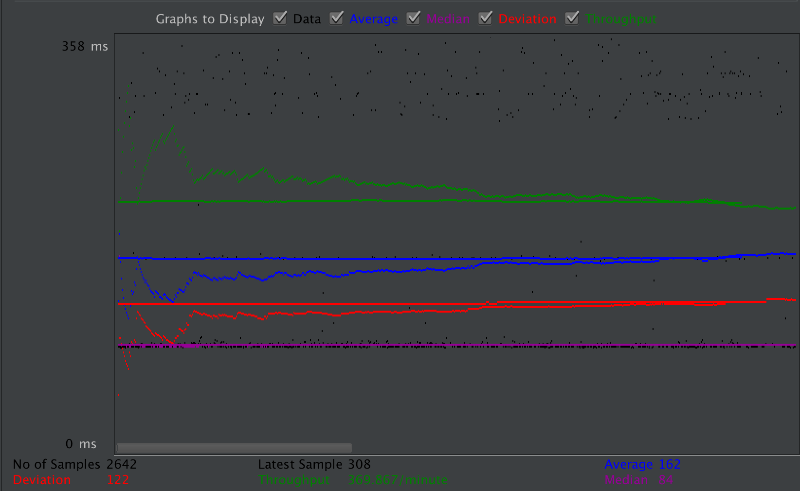
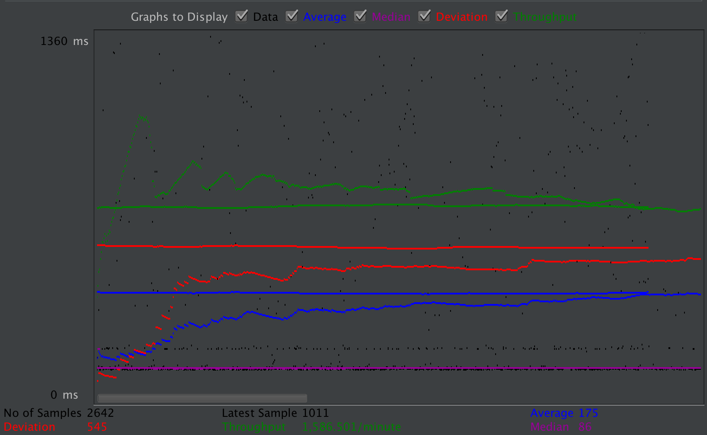
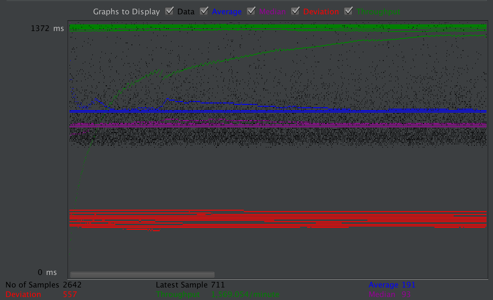
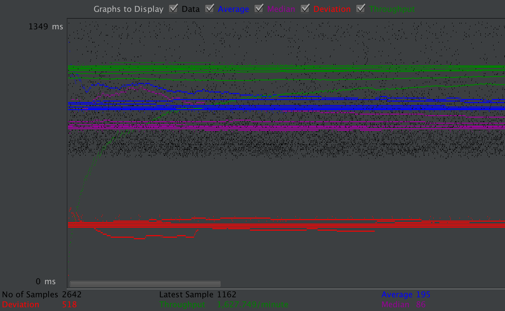

| Single-instance version cases | Graph Results Screenshot | Average Query Time(ms) | Average Search Servlet Time(ms) | Average JDBC Time(ms) | Analysis |
| Case 1: HTTP/1 thread |  | 194 | 195.70 | 189.15 | Everything works perfect. Instance 1 takes all the jobs. |
| Case 2: HTTP/10 threads |  | 196 | 193.24 | 186.77 | It should be slower than the multiple instances since there is only one instance to do all the queries. 10 threads make it be a little bit slower. |
| Case 3: HTTPS/10 threads |  | 208 | 192.40 | 185.96 | Https takes extra steps, but it does not seem to be effect a lot in out test. |
| Case 4: HTTP/10 threads/No prepared statements |  | 203 | 193.76 | 187.33 | prepared statements is not really useful here since the number of queries is bery small, so there is not much difference. |
| Case 5: HTTP/10 threads/No connection pooling |  | 212 | 196.75 | 190.05 | Connection polling makes the difference of TS and TJ becomes larger. |
| Scaled version cases | Graph Results Screenshot | Average Query Time(ms) | Average Search Servlet Time(ms) | Average JDBC Time(ms) | Analysis |
| Case 1: HTTP/1 thread |  | 162 | 6.29 | 5.94 | It should be a little bit faster than 10 threads because it takes less queries at the same time, the load is lighter than 10 threads, which gives it a better performance. |
| Case 2: HTTP/10 threads |  | 175 | 28.22 | 26.57 | Comparing to single server, since the master and slave instances both do their jobs, the performence is a little bit better than single server. |
| Case 3: HTTP/10 threads/No prepared statements |  | 191 | 28.53 | 26.94 | The result of prepared statements in our case is kind of limited, so removing it does not change a lot in the performance. |
| Case 4: HTTP/10 threads/No connection pooling |  | 195 | 29.40 | 25.69 | Removing connection polling makes the difference between TS and TJ becomes larger. |